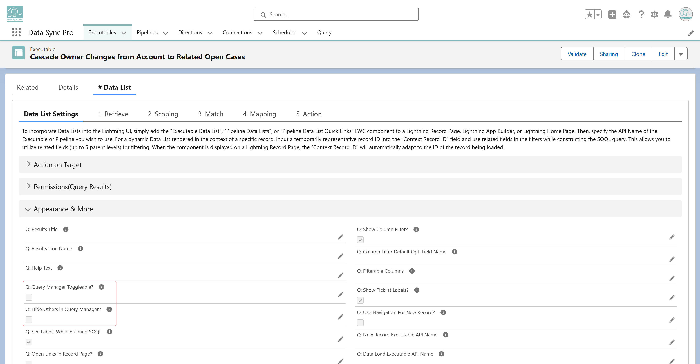

In the #Data List Executable:
Enable "Q: Query Manager Toggleable?" – Allows users to open the Query Manager and adjust the query through an intuitive UI, including filters, sorting, and field selection.
(Optional) Enable "Q: Hide Others in Query Manager?" – Hides the Other section of the Query Manager to provide a more streamlined experience.
